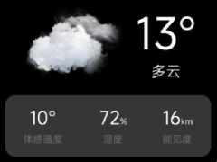
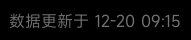
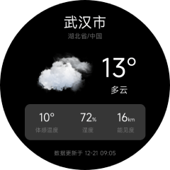
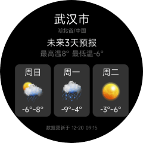

# 编写页面UI
在上一节项目结构中，介绍了 Vela JS 应用项目中各文件、目录的作用，对项目结构有了一定的了解之后，接下来我们会实现一个简单的天气预报App。
这个章节将实现这个App的页面UI，主要内容为：页面的基本结构、样式、数据结构定义以及数据渲染。
根据UI设计稿还原样式是一个比较细致并且耗时的工作，为了提高工作效率，一般情况下，我们推荐先整体构思页面的实现方式（页面结构、样式和交互等），然后编写页面结构、然后统一添加样式，最后添加数据渲染和交互。
这个使用指南中，为了方便展示 Vela JS 应用中页面结构，样式和交互的开发，采用了上述的开发流程。开发者在实际开发中，也可以根据自己的开发习惯，选择适合自己的工作流。
提示
这部分有比较多的代码片段，如果您已经对HTML/CSS/JavaScript很熟悉，您可以选择跳过此部分内容。 但我们还是建议您阅读本章的内容，以了解 Vela JS 应用开发和传统前端开发的一些区别。
# 功能需求
我们将要实现的天气预报App由两个页面组成：实时天气和未来3天天气。实时天气界面展示当前天气情况，主要包括天气、温度、湿度和能见度等信息。未来3天天气页面用于展示未来三天的天气情况。
最终要实现的效果图如下：


# 准备工作
这个App使用和风天气API获取天气数据，图标使用和风天气图标。
该使用指南中的天气App仅用于演示 Vela JS 应用开发技术，如需在实际项目中使用相关接口和资源，请到和风天气开发平台注册并开通接口后使用。详细信息可在官网查看：
- 和风天气开发平台: https://dev.qweather.com/ (opens new window)
- 和风天气图标: https://icons.qweather.com/ (opens new window)
- 图标下载地址: https://github.com/qwd/WeatherIcon (opens new window)
# 页面结构
在项目结构章节中，我们介绍了一个页面(ux文件)包含三部分：template、style和script
。接下来分别编写这两个页面的模板（template）代码。
跟HTML非常类似，Vela的页面模板也是由标签和属性构成，并且语法也大部分与HTML保持一致。不一样的是Vela有自己的一系列内置组件，跟HTML支持的不完全相同。
接下来的代码中，我们使用到了div、text和image组件，关于组件详细的使用方法，可以参考Vela官方文档 - 组件。
# 实时天气
实时天气页面，从整体上可以划分为上中下三部分： header、body和footer，代码如下。
<template>
<div class="page">
<!-- 头部城市信息 -->
<div class="header"></div>
<div class="body">
<!-- 主要天气信息 -->
<div class="info"></div>
<!-- 体感温度等其他信息 -->
<div class="more-info"></div>
</div>
<!-- 底部更新时间 -->
<div class="footer"></div>
</div>
</template>
温馨提示
template只能有一个根节点。
头部信息，包含城市、省份和国家信息，结构相对简单，代码如下：
<!-- 头部城市信息 -->
<div class="header">
<text class="city">武汉市</text>
<text class="province">湖北省/中国</text>
</div>
温馨提示
文本必须放在text组件中，否则文本将无法展示在界面中。
天气信息部分，相比头部要稍微复杂一点，总体可以分为左右两列，右侧部分又分为上下两行。代码如下：
<!-- 主要天气信息 -->
<div class="info">
<image class="icon" src="/common/icons/101.png"></image>
<div class="column center">
<text class="temp">6°</text>
<text class="weather">晴转多云</text>
</div>
</div>
接下来实现体感温度等其他信息模块，整体上可以分为三列，每一列又分成两行，代码如下：
<!-- 体感温度等其他信息 -->
<div class="more-info row">
<div class="item column center">
<text class="value">10°</text>
<text class="label">体感温度</text>
</div>
<div class="item column center">
<div><text class="value">67</text><text class="sub">%</text></div>
<text class="label">湿度</text>
</div>
<div class="item column center">
<div><text class="value">5</text><text class="sub">km</text></div>
<text class="label">能见度</text>
</div>
</div>
</div>
最后是底部更新时间模块，这个模块结构相对比较简单，代码如下：
<!-- 底部更新时间 -->
<div class="footer center">
<text class="update-time">数据更新于12-20 09:15</text>
</div>
# 未来3天天气
这个页面跟实时天气页面整体结构相同，也分为上中下三部分，并且header以及footer内容一致，这里不再赘述。
接下来主要看中间部分的实现，主要包括未来3天天气概况以及天气列表。
天气概况分为上下两行，代码如下：
<!-- 天气概况 -->
<div class="info">
<text class="title">未来3天预报</text>
<text class="summary">最高温8° 最低温-6°</text>
</div>
天气列表相对复杂一点，首先整体可以分为三列，每一列又可分成三行，代码如下：
<!-- 未来3天天气 -->
<div class="list">
<div class="item">
<text class="date">周日</text>
<image class="icon" src="/common/icons/301.png"></image>
<text class="temp">-6°~8°</text>
</div>
<div class="item">
<text class="date">周一</text>
<image class="icon" src="/common/icons/311.png"></image>
<text class="temp">-9°~4°</text>
</div>
<div class="item">
<text class="date">周二</text>
<image class="icon" src="/common/icons/100.png"></image>
<text class="temp">-3°~6°</text>
</div>
</div>
# 页面样式
Vela支持常用的CSS特性，也进行了少量的扩充以及修改，默认支持对不同尺寸屏幕的适配。详细的属性支持情况可以在属性列表中查询。
Vela JS 应用采用flex布局，可以方便实现常用的布局样式，关于flex布局的技术细节，可以参考MDN文档 (opens new window)。
目前只支持类选择器、ID选择器、分组选择器(,)和标签选择器，不支持后代选择器、属性选择器、通用选择器(*)、兄弟选择器(+)、直接父子选择器(>)、伪类和继承。
目前为止，我们已经完成了页面结构的代码编写，但是目前为止，还未涉及任何样式的设置。接下来我们将分别实现各个模块的样式。
# 公共样式
编写样式代码之前，可以先提取出一些基础的公共样式，比如排列方式，颜色和对齐方式等。
在我们这个项目中，主要使用到了水平排列和垂直排列，居中等。 颜色方面，主要是白色，我们可以将text的颜色默认设置为白色。
提取出的基础样式为：
/* 公共样式 */
text {
color: #ffffff;
}
.column {
flex-direction: column;
}
.row {
flex-direction: row;
}
.center {
align-items: center;
justify-content: center;
}
# page
为了解决屏幕适配问题，所有与大小相关的样式（例如width、font-size）均以基准宽度（默认480px）为基础，根据实际屏幕宽度进行缩放，例如width:100px在960px宽度屏幕上，实际上为200px。
我们设计稿按照480px宽度进行设计，所以设计稿中的尺寸，可以直接在样式中使用。比如下图中，整体宽度为480，体感温度等信息模块的尺寸为335*100，那么CSS代码为：
.info {
width: 335px;
height: 100px;
}

对于整体页面，我们先将页面背景设置为黑色，形状设置为圆形，并设置页面宽度。
.page {
padding: 40px;
background-color: #000000;
width: 480px;
border-radius: 240px;
}
说明
如果设计稿基准宽度不是480，可以在manifest.json文件中通过config.designWidth字段配置：
{
// ...
"config": {
"designWidth": 360
}
}
# 头部信息
头部信息竖向排列，并且居中，可以使用前面抽取的公共样式：column和center。然后给文本分别添加样式，控制字体大小和颜色。
修改后的模板代码如下：
<!-- 头部城市信息 -->
<div class="header column center">
<text class="city">武汉市</text>
<text class="province">湖北省/中国</text>
</div>
CSS代码如下：
/* 头部样式 */
.city {
font-size: 40px;
}
.province {
font-size: 18px;
color: #757575;
}
实际运行结果：
# 实时天气
跟头部信息类似，首先添加基础样式column、row和center来实现基本的布局，然后对各个文本组件，针对性的编写CSS代码来实现文字颜色，尺寸等样式。
添加完成后的模板代码如下：
<div class="body column center">
<!-- 主要天气信息 -->
<div class="info">
<image class="icon" src="/common/icons/101.png"></image>
<div class="column center">
<text class="temp">6°</text>
<text class="weather">晴转多云</text>
</div>
</div>
<!-- 体感温度等其他信息 -->
<div class="more-info row">
<div class="item column center">
<text class="value">10°</text>
<text class="label">体感温度</text>
</div>
<div class="item column center">
<div><text class="value">67</text><text class="sub">%</text></div>
<text class="label">湿度</text>
</div>
<div class="item column center">
<div><text class="value">5</text><text class="sub">km</text></div>
<text class="label">能见度</text>
</div>
</div>
</div>
体感温度等信息模块，首先水平方向排列(flex-direction: row)，然后各个item设置flex: 1，这样就实现了各个item宽度相等的效果。
具体到每个item里面，只需要分别设置各个文本字段的颜色和大小即可。
CSS代码如下：
/* 天气数据样式 */
.body {
flex: 1;
}
.temp {
font-size: 70px;
}
.icon {
width: 170px;
height: 170px;
margin-right: 20px;
}
.weather {
font-size: 24px;
}
/* 更多信息样式 */
.more-info {
width: 335px;
height: 100px;
background-color: rgba(255, 255, 255, 0.21);
border-radius: 15px;
}
.item {
flex: 1;
}
.value {
font-size: 30px;
}
.sub {
font-size: 14px;
margin-top: 10px;
}
.label {
color: #757575;
margin-top: 5px;
}
实际运行结果：

# 未来3天天气
天气概况信息模块样式比较简单，竖向排列即可。
跟体感温度等信息模块类似，未来三天天气列表也使用水平方向排列。不同的地方在于，各个item有背景颜色并且之间有间距，所以给各个item设置了固定的尺寸，然后根据剩下的空间
给各个item之间分配间距(justify-content: space-between)。
修改完成后的模板代码为：
<!-- 未来3天天气 -->
<div class="list row">
<div class="item column center">
<text class="date">周日</text>
<image class="icon" src="/common/icons/301.png"></image>
<text class="temp">-6°~8°</text>
</div>
<div class="item column center">
<text class="date">周一</text>
<image class="icon" src="/common/icons/311.png"></image>
<text class="temp">-9°~4°</text>
</div>
<div class="item column center">
<text class="date">周二</text>
<image class="icon" src="/common/icons/100.png"></image>
<text class="temp">-3°~6°</text>
</div>
</div>
CSS代码为：
/* 天气数据样式 */
.body {
flex: 1;
}
.info {
margin-bottom: 20px;
}
.title {
font-size: 30px;
}
.summary {
font-size: 24px;
color: #757575;
}
/* 未来3天天气 */
.list {
width: 380px;
justify-content: space-between;
}
.item {
width: 120px;
height: 175px;
background-color: rgba(255, 255, 255, 0.2);
border-radius: 15px;
}
.date {
font-size: 28px;
}
.icon {
width: 90px;
height: 90px;
}
.temp {
font-size: 24px;
}
实际运行结果：

# 底部信息
底部信息最终的模板代码如下：
<!-- 底部更新时间 -->
<div class="footer center">
<text class="update-time">数据更新于 12-20 09:15</text>
</div>
CSS代码如下：
/* 底部样式 */
.footer {
margin-top: 20px;
}
.update-time {
color: #757575;
}
实际运行结果：

# 页面效果
完成页面结构和样式后，模拟器中实际运行的结果如下：
 
# 页面数据
我们已经实现了页面数据的渲染，但是目前所有的数据都是直接写到模板代码中，不能在程序中动态修改。
如果需要在程序中动态修改界面上展示的数据，需要将数据存储到页面数据对象中，然后使用双大括号语法来引用数据，比如{{ name }}，详细使用方法可以参考模板语法。
数据定义，需要通过JavaScript脚本来实现。跟HTML一样，JavaScript代码需要放在script标签中：
<script>
export default {
private: {
city: '武汉市',
province: '湖北省',
country: '中国',
weather: {
// 数据观测时间
obsTime: "12-21 09:05",
// 温度
temp: "13",
// 体感温度
feelsLike: "10",
// 天气icon图标编号
icon: "101",
// 天气描述文本
text: "多云",
// 相对湿度
humidity: "72",
// 能见度，单位：公里
vis: "16"
}
}
}
</script>
定义好数据之后，替换之前的模板代码，替换后为：
<template>
<div class="page column">
<!-- 头部城市信息 -->
<div class="header column center">
<text class="city">{{city}}</text>
<text class="province">{{province}}/{{country}}</text>
</div>
<div class="body column center">
<!-- 主要天气信息 -->
<div class="info">
<image class="icon" src="/common/icons/{{weather.icon}}.png"></image>
<div class="column center">
<text class="temp">{{weather.temp}}°</text>
<text class="weather">{{weather.text}}</text>
</div>
</div>
<!-- 体感温度等其他信息 -->
<div class="more-info row">
<div class="item column center">
<text class="value">{{weather.feelsLike}}°</text>
<text class="label">体感温度</text>
</div>
<div class="item column center">
<div><text class="value">{{weather.humidity}}</text><text class="sub">%</text></div>
<text class="label">湿度</text>
</div>
<div class="item column center">
<div><text class="value">{{weather.vis}}</text><text class="sub">km</text></div>
<text class="label">能见度</text>
</div>
</div>
</div>
<!-- 底部更新时间 -->
<div class="footer center">
<text class="update-time">数据更新于 {{weather.obsTime}}</text>
</div>
</div>
</template>
# 列表渲染
在未来3天天气预报页面中，使用到了数组存储未来3天的天气数据。可以使用for指令来渲染（详细的for指令用法，请参考列表渲染）。
数据定义为：
{
list: [
{
"fxDate": "周日",
"tempMax": "12",
"tempMin": "-1",
"iconDay": "101",
"textDay": "多云",
},
{
"fxDate": "周一",
"tempMax": "13",
"tempMin": "0",
"iconDay": "100",
"textDay": "晴"
},
{
"fxDate": "周二",
"tempMax": "13",
"tempMin": "0",
"iconDay": "302",
"textDay": "晴",
"iconNight": "150",
"textNight": "晴"
}
]
}
模板代码：
<!-- 未来3天天气 -->
<div class="list row">
<div class="item column center" for="{{list}}">
<text class="date">{{$item.fxDate}}</text>
<image class="icon" src="/common/icons/{{$item.iconDay}}.png"></image>
<text class="temp">{{$item.tempMin}}°~{{$item.tempMax}}°</text>
</div>
</div>
运行结果：

# 条件渲染
实际项目中经常会需要使用到条件判断，根据不同的条件渲染不同的UI。要使用条件渲染，请参考条件指令。